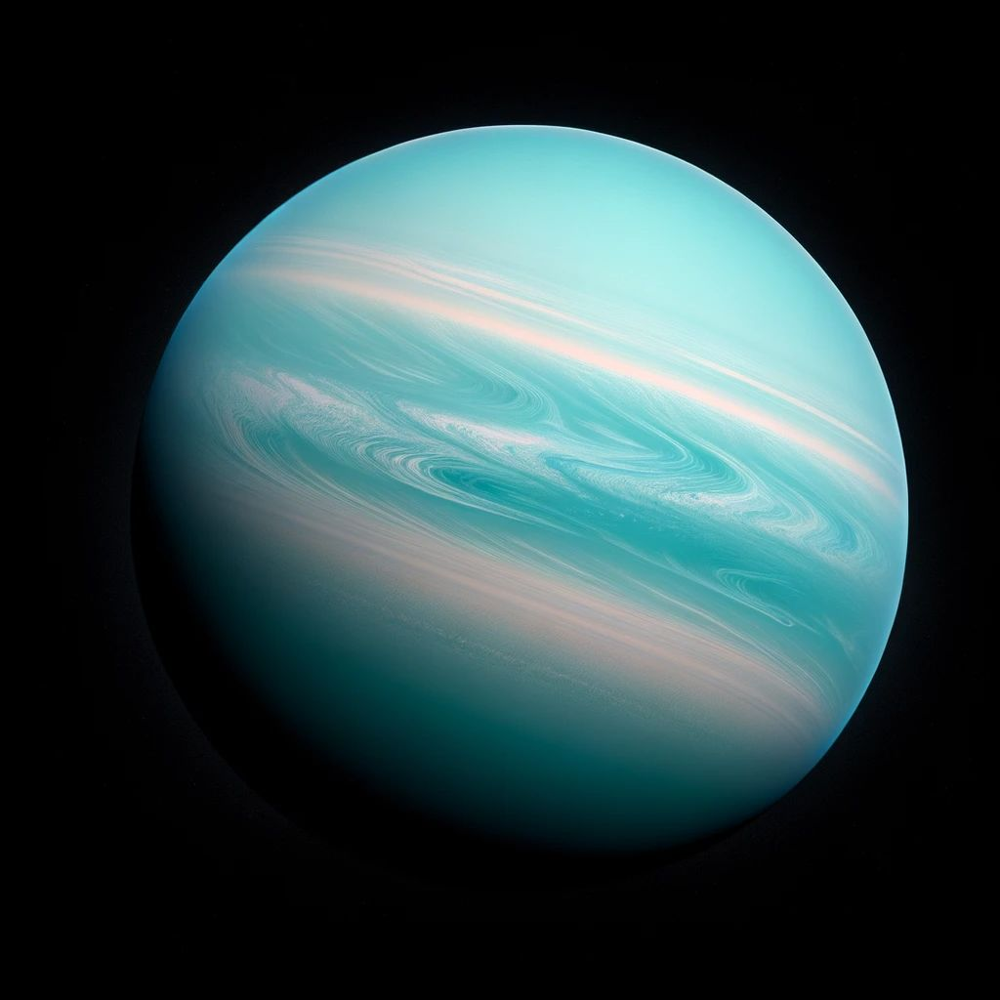

أورانوس (رمزه: ⛢) هو سابع الكواكب بعدًا عن الشمس، وثالث أضخم كواكب المجموعة الشمسية، والرابع من حيث الكتلة. سمي على اسم الإله أورانوس (باليونانية القديمة: Οὐρανός) في الميثولوجيا الإغريقية. لم يتم تمييزه من قبل الحضارات القديمة على أنه كوكب رغم أنه مرئي بالعين المجردة،
